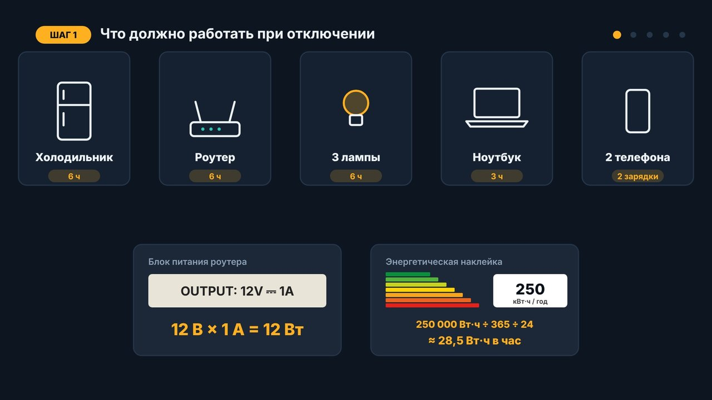
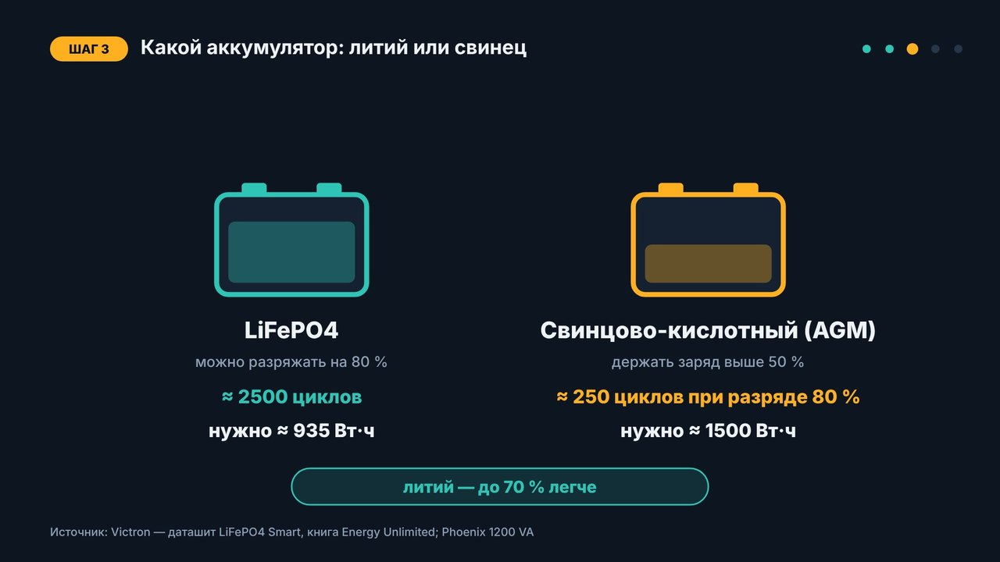
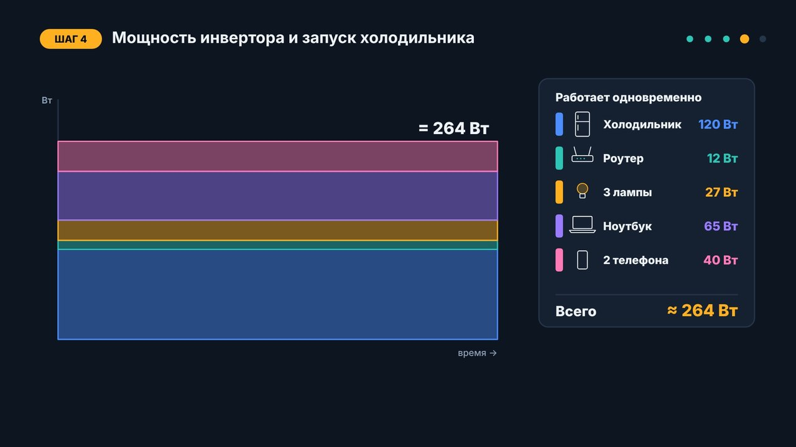

Резервное питание квартиры: расчёт по шагам
Свет отключили на шесть часов. Чтобы холодильник, интернет, свет и ноутбук продолжали работать, хватает аккумулятора с инвертором — если правильно их подобрать. Ниже пять шагов расчёта на понятном примере.
Ролик, 5:50. Не открывается? Смотреть на YouTube или читайте расчёт ниже — в нём всё то же самое.
Подставьте свои приборы и время отключения — калькулятор посчитает по тем же формулам.
Открыть калькуляторКак устроена система
Аккумулятор хранит энергию. Инвертор превращает его постоянный ток в обычные 220 В, как в розетке. Между ними обязательно стоит предохранитель. Приборы подключаются к розеткам инвертора или через удлинитель. Когда свет есть, аккумулятор заряжается — от отдельного зарядного устройства или от инвертора со встроенной зарядкой.

1Список приборов
Решите, что действительно нужно во время отключения — не вся квартира, а самое важное. В примере: холодильник, роутер, три светодиодные лампы, ноутбук и зарядка двух телефонов; отключение — 6 часов.
Мощность прибора написана на нём самом: на наклейке, табличке или блоке питания. Например, у роутера на блоке питания «12V 1A»: 12 В × 1 А = 12 Вт. Это максимум, так что расчёт получится с запасом.
Холодильник работает не постоянно: компрессор то включается, то выключается. Поэтому берём не мощность, а годовое потребление с энергетической наклейки:

2Энергия за время отключения
Мощность умножаем на время работы. Получаем ватт-часы — сколько энергии съест каждый прибор.
| Прибор | Мощность | Время | Энергия |
|---|---|---|---|
| Холодильник | 28,5 Вт в среднем | 6 ч | 171 Вт·ч |
| Роутер | 12 Вт | 6 ч | 72 Вт·ч |
| 3 светодиодные лампы | 3 × 9 Вт | 6 ч | 162 Вт·ч |
| Ноутбук | 65 Вт (блок питания) | 3 ч | 195 Вт·ч |
| 2 зарядки телефона | ≈ 15 Вт·ч каждая | — | 30 Вт·ч |
| Итого | ≈ 630 Вт·ч |
15 Вт·ч на зарядку — пример: аккумулятор телефона 4000 мА·ч × 3,7 В ≈ 15 Вт·ч. Ёмкость вашего телефона — в его характеристиках.
3Ёмкость аккумулятора
Аккумулятор берём с запасом по трём причинам.
- Потери в инверторе. У хороших моделей на 12 В КПД доходит до 92 %. Это максимум, поэтому считаем 90 %: 630 ÷ 0,9 = 700 Вт·ч.
- Холостой ход. Инвертор потребляет энергию сам, даже без нагрузки: у модели на 1200 ВА — около 8 Вт. За 6 часов это ещё 48 Вт·ч, итого ≈ 748 Вт·ч.
- Глубина разряда. Аккумулятор нельзя разряжать в ноль. LiFePO4 по данным производителя выдерживает около 2500 циклов при разряде на 80 %: 748 ÷ 0,8 ≈ 935 Вт·ч.

Литий или свинец
| LiFePO4 | Свинцово-кислотный AGM | |
|---|---|---|
| Глубина разряда в расчёте | 80 % | 50 % — производитель советует не оставлять разряженным больше чем наполовину |
| Ресурс | ≈ 2500 циклов при разряде 80 % | ≈ 250 циклов при разряде 80 % |
| Нужно для примера | ≈ 935 Вт·ч | ≈ 1500 Вт·ч |
| Вес | Литий, по данным производителя, до 70 % легче; свинец дешевле при покупке | |

4Мощность инвертора
Сначала складываем всё, что может работать одновременно: холодильник по табличке 120 Вт, роутер 12, лампы 27, ноутбук 65, две зарядки телефонов около 40. Всего ≈ 264 Вт.

Но холодильник при запуске берёт намного больше. Производитель инверторов Samlex пишет, что холодильнику на старте нужно примерно в 5 раз больше рабочей мощности, и рывок длится до 5 секунд. Поэтому инвертор подбираем по длительной мощности, а не по короткому пику:
Для холодильника нужен инвертор с чистой синусоидой: на модифицированной синусоиде двигатели сильнее греются.

5Сборка и безопасность
Аккумулятор, предохранитель и инвертор соединяют толстыми короткими проводами. На 12 В ток большой: при нагрузке 1000 Вт это около 85 А (1000 ÷ (12,8 В × 0,92)). Сечение кабеля и номинал предохранителя берите из инструкции к инвертору. Приборы включайте в розетки инвертора или через удлинитель.

Что купить для примера
- Аккумулятор LiFePO4 12,8 В, 100 А·ч (1280 Вт·ч).
- Инвертор с чистой синусоидой, длительная мощность не меньше ≈ 750 Вт; смотрите КПД и холостой ход в паспорте.
- Предохранитель и кабели — по инструкции к инвертору.
- Зарядное устройство, подходящее для вашего типа аккумулятора, или инвертор со встроенной зарядкой.
- Удлинитель для подключения приборов.
Мощности приборов в примере — примеры с наклеек. Для своей квартиры подставьте свои цифры в калькулятор.
Источники
- Victron Energy — даташит LiFePO4 Smart 12,8 В: ячейка 3,2 В, 2500 циклов при разряде 80 %, до 70 % легче.
- Victron Energy — «Energy Unlimited»: свинцовый аккумулятор не оставлять разряженным больше 50 %; AGM ≈ 250 циклов при разряде 80 %.
- Victron Energy — даташит Phoenix Inverter 180–1200 VA: КПД до 92 % (12 В), холостой ход 8 Вт, 1200 ВА = 1000 Вт длительно, 2400 Вт пик.
- Samlex — FAQ по инверторам: пусковая мощность холодильника ≈ 5× рабочей, до 5 секунд; не подключать выход инвертора к щитку, питающемуся от сети.
- Samlex — чистая и модифицированная синусоида: на модифицированной двигатели сильнее греются.
- CPSC — памятка по портативным генераторам: обратная подача опасна для электриков и соседей.
Проверено 14 ноября 2026 г. Нашли ошибку — напишите в комментариях под роликом.